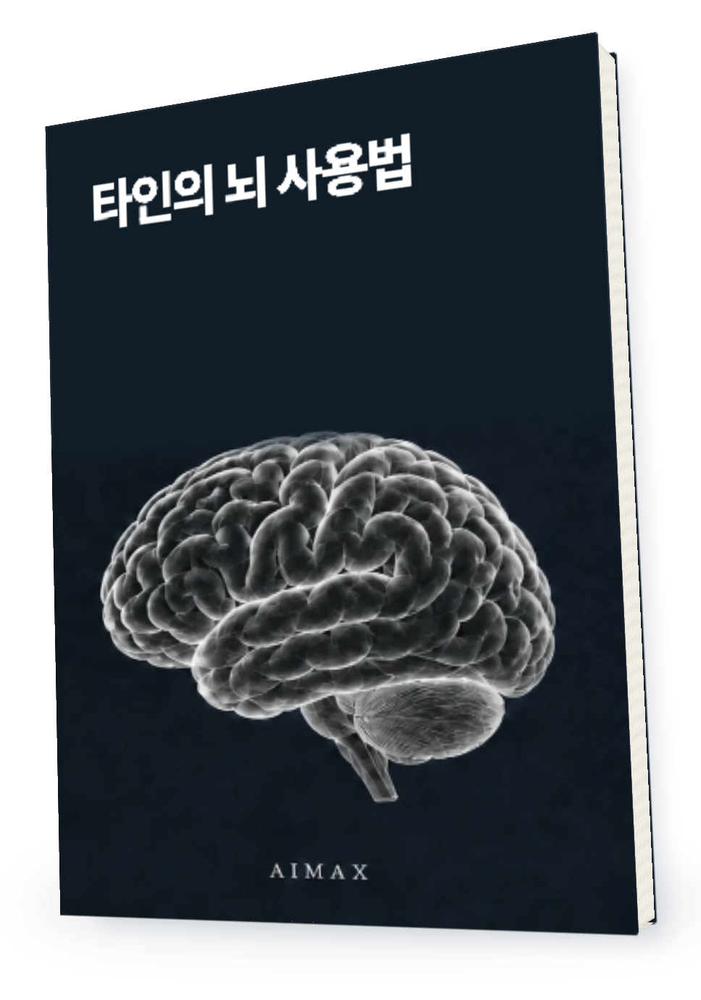
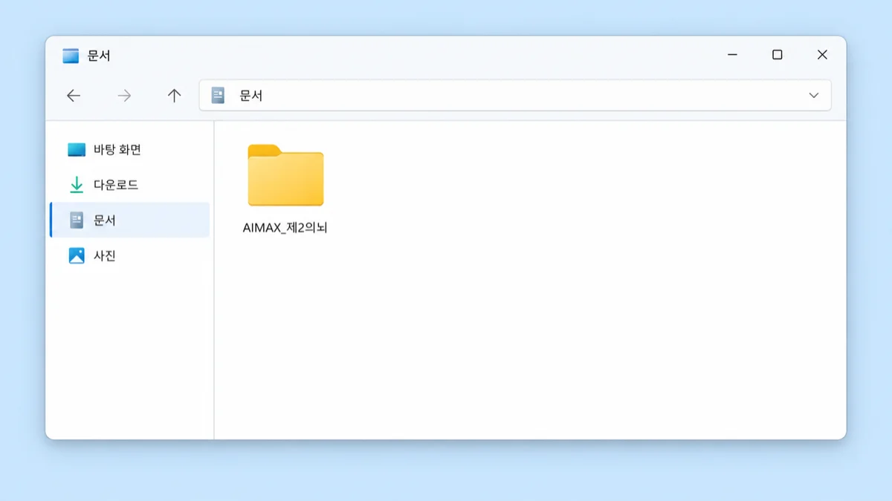
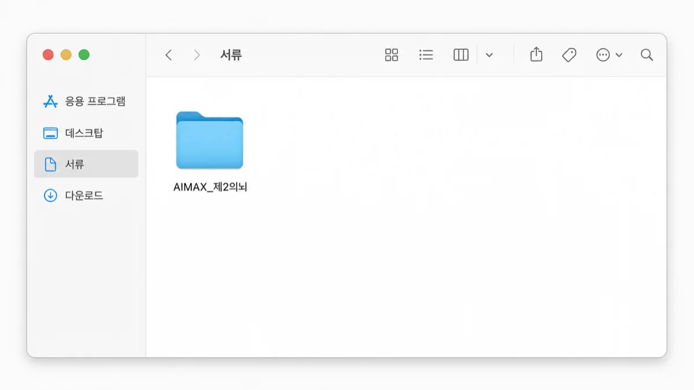
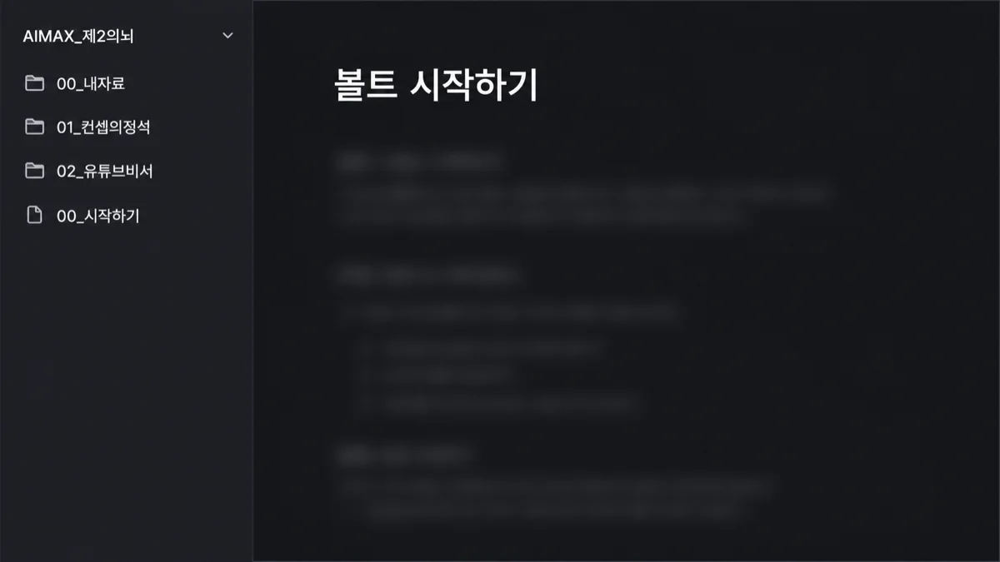

메이크패밀리 · 전자책
책과 뇌 파일을 받았는데
어디서부터 시작하죠?
받아둔 책을
내 일에 쓰기

내 뇌 사용법
압축을 풀고, 책을 읽고,
AI에 필요한 파일을 첨부하는 안내서입니다.
가장 먼저 구분할 것
보관한 파일을
AI가 저절로 읽진 않아요
🧠
읽고 보관
Obsidian
책을 보관하고 읽는 곳입니다.
첨부하고 질문
AI 대화
책 파일을 직접 첨부하고 내 상황을 알려줍니다.
책 속 내용을 바탕으로 재구성
파일을 옮기는 것과
AI에 넣는 것은 별개
내 컴퓨터에 책을 저장했더라도 AI 대화에는 필요한 파일을 직접 올려야 합니다.
01 · 압축 풀기
내 뇌 폴더를
문서 안에 둡니다

압축을 풀고 나온 폴더를 옮깁니다.
맥에서는 ‘서류’ 폴더를 찾으세요.

02 · 책 읽기
새 볼트 만들기 대신
폴더를 볼트로 열기

책 속 내용을 바탕으로 재구성
책이 안 보인다면
빈 폴더를 새로 만든 것은 아닌지 확인합니다. 받은 책 파일이 들어 있는 폴더를 골라야 합니다.
03 · AI에 첨부
책전체 TXT를
직접 올려주세요
📎
첨부할 파일 하나AI에_넣을_책전체.txt
설명용 예시 · 실제 서비스 화면 아님
파일을 읽고 답해줘
첨부한 책의 내용으로 답하고
책에 없는 내용은 구분해줘.
내 상황은 다음과 같아.
내 상황을 함께 전달하기
책만 첨부하고 끝내지 않습니다.
내 상품과 고객, 지금 막힌 지점을
별도로 알려줍니다.
04 · 답변 확인
읽었는지 묻고
내 자료로 남깁니다
1책의 내용을 확인핵심 내용과 근거를 질문하기
2내 상황에 적용답변에 내 상품 정보가 반영됐는지 보기
3결과를 저장쓸 만한 답은 00_내자료에 정리하기
책 속 내용을 바탕으로 재구성
다음 책을 추가할 때
번호가 붙은 책 폴더를 옮기고 기존 내자료는 덮어쓰지 않습니다. AI에도 새 책 파일을 추가합니다.
이 안내서를 쓰는 곳
메이크패밀리
라운지에서 시작합니다.
AIMAX · 메이크패밀리
(주)메이크프렌즈
연간 매출
40.5억2021년
41.3억2022년
27.6억2023년
출처: (주)메이크프렌즈 월별 매출 원장.
각 연도 1~12월 합계입니다.
2,885명
라운지 홈에 표시된
함께 배우는 사람
함께 배우는 사람

메이크패밀리 라운지 홈에 표시된 인원.
2026.09.10 첫 화면 캡처 기준.
책을 받아두는 데서
실제로 쓰는 데까지.
이 안내서는 책 파일을 읽고
AI에 첨부하는 순서를 알려줍니다.
12,127명
메이크패밀리 네이버 카페 회원

메이크패밀리 네이버 카페 westudyssat 회원수.
2026.09.10 캡처 기준.
FAQ
읽기 전에
궁금한 것들
Q
Obsidian을 꼭 써야 AI에 넣나요?
ANSWER책전체 TXT를 AI에 직접 첨부하는 과정과 Obsidian에서 읽는 과정은 별개입니다. Obsidian은 보관과 읽기를 돕습니다.
Q
AI가 책을 영구히 기억하나요?
ANSWER파일을 첨부하는 활용법입니다. AI의 재학습이나 영구 기억을 뜻하지 않습니다. 새 대화에서는 첨부 상태를 확인하세요.
Q
처음 설치하는 사람도 볼 수 있나요?
ANSWER압축을 풀고 폴더를 고르는 과정부터 안내합니다. 빈 목록과 파일명 문제처럼 처음에 막히는 부분도 다룹니다.
메이크패밀리 전자책
내 뇌 사용법
무료
라운지에서 무료로 읽기
메이크패밀리 라운지에 등록된
무료 사용 안내서입니다.
읽기 전 확인해주세요
본문을 바탕으로 만든 설명 화면은 이해를 돕는 예시입니다. 개인의 실행 환경과 적용 방식에 따라 결과는 달라집니다.